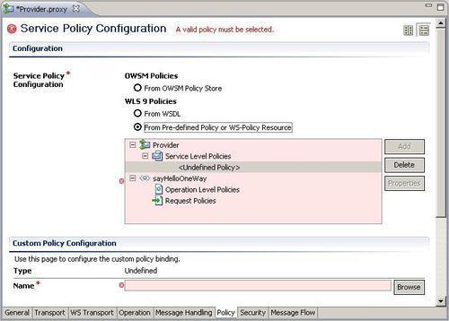
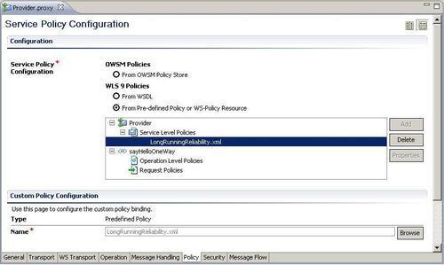
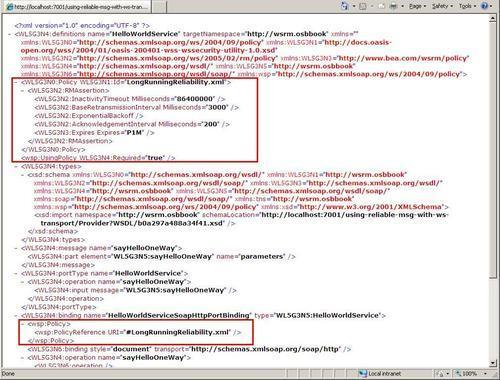
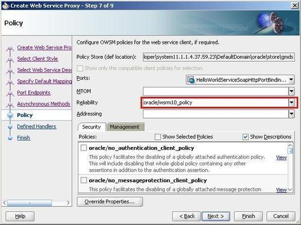
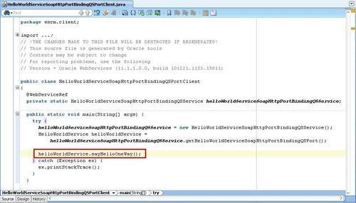
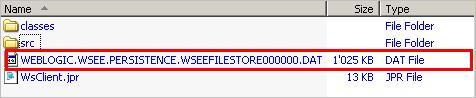
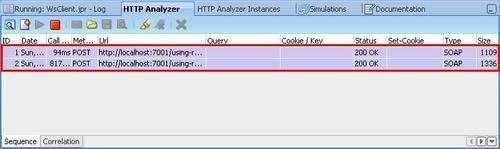
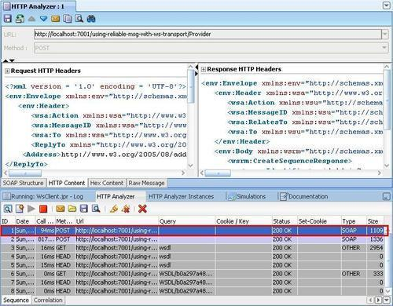
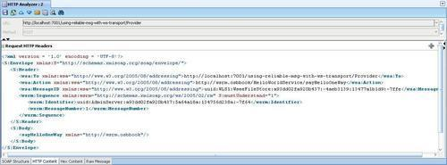
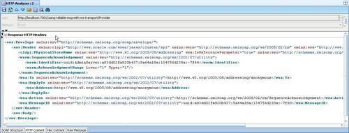

In this recipe, we will create a one-way (fire and forget) proxy service that contains a long running WS-RM (Reliable Messaging) policy and test this WS-RM policy in a JDeveloper web service proxy client.
We will use the WS transport, which implements both inbound and outbound requests for SOAP-based services with a WS-RM policy.
For this recipe, we will use a setup with a very simple proxy service based on a WSDL containing only a one-way operation. For the WS-RM client we will use JDeveloper.
You can import the OSB project into Eclipse from \chapter-10\getting-ready\using-reliable-msg-with-ws-transport.
First, let's change the proxy service to use the WS transport and add the reliable messaging policy. In Eclipse OEPE, perform the following steps:

LongRunningReliability.xml policy:
$body.In a browser, perform the following steps:
WSDL of the WS-RM proxy service by entering the following URL: http://[OSBServer]:[Port]/using-reliable-msg-with-ws-transport/Provider?wsdl. WSDL contains the RM assertion, as shown in the following screenshot:
Now with the service implemented, let's create a client to test the behaviour. In JDeveloper, perform the following steps:
Generic into the search field, select Generic Application and click on OK. ReliableMessaging into the Application Name field and click on Next. WsClient into the Project Name field and click on Finish. Web Service Proxy. http://[OSBServer]:[Port] /using-reliable-msg-with-ws-transport/Provider?wsdl. wsrm.client into the Package Name field. wsrm.types into the Root Package for Generated Types field.
HelloWorldServiceSoapHttpPortBindingQSPortClient class. main() method to invoke the sayHelloOneWay operation as shown in the following screenshot:



The request with the real payload sent to the OSB is shown in the following screenshot:


In WS-RM, the JDeveloper Web Service proxy and the OSB proxy server both have or start agents that handle, intercept the message communication, and are responsible for the retries of these messages. In this case, JDeveloper is the RM Source and the OSB is the RM Destination.
To make sure these messages are not lost, we will see that JDeveloper creates a file persistence that stores the request and the status of these requests.
In this recipe, we used WS-RM in a one-way messaging pattern. Beside one way, WS-RM can also support asynchronous communication. It's important to know that the WS transport of OSB, only supports WS-RM 1.0 and that the response in the asynchronous communication does not take part in reliable communication.
The following steps explain how WS-RM works in a one-way messaging pattern.
CreateSequence request. The OSB RM Destination agent intercepts the message and responds with a CreateSequence response, which contains a sequence identifier ID. The identifier ID should be used in every communication between the RM Source and Destination. Sequence Acknowledgement in the SOAP header and an empty SOAP body (because of the one-way communication). The Sequence Acknowledgement says that every message is received and handled.If something goes wrong, the JDeveloper RM Source will resend those requests until it gets the Sequence Acknowledgement.
In this recipe, we used the pre-defined LongRunningReliability.xml as our WS-RM policy. Beside this LongRunningReliability.xml policy, we can also use the DefaultReliability.xml policy or even create our own. The difference between these two policies is that the activity timeout of LongRunningReliability.xml is 24 hours and in DefaultReliability.xml, it is 10 minutes.
When we start the JDeveloper WEB Service proxy client, we can get a persistence store error. To solve this, it is necessary to remove the persistence store in the generic project folder.